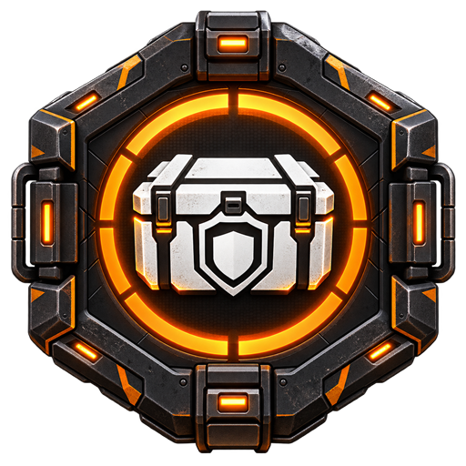

01 / ANALİZ
Eşyayı tanı.
Build’inle karşılaştır.
Ekrandaki eşya kartını OCR ile oku. Attribute ve talent’leri kütüphane verisiyle karşılaştır; sonuçları aktif build’in yanında gör.
Tarama akışını incele ↗
TD2 LOOT ADVISORBAĞIMSIZ TOPLULUK PROJESİ · WINDOWS + ANDROID
Envanterini tara. Eşyanı build’inle karşılaştır. Ne saklayacağına, neyi yeniden inceleyeceğine daha hızlı karar ver.
SAHADA İHTİYACIN OLAN BİLGİ
Eşya kararlarından build planına, görev takibinden telefon eşleşmesine kadar yardımcı araçlar tek yerde.
Ekrandaki eşya kartını OCR ile oku. Attribute ve talent’leri kütüphane verisiyle karşılaştır; sonuçları aktif build’in yanında gör.
Tarama akışını incele ↗Build parçalarını düzenle, eksikleri gör ve sandığındaki eşyaları hedeflerinle kıyasla.
Günlük ve haftalık hedefleri, sezon içeriklerini ve ilerlemeni tek listede takip et.
Aynı özel Wi-Fi ağında QR ile eşleştir. Son eşya kararı ve build bilgisi telefonda salt okunur görüntülenir.
ÜÇ ADIMDA
TD2 Loot Advisor oyun ekranını okur ve eşya bilgilerini hedeflerinle eşleştirir. Önemli kararların son kontrolü sende kalır.
Envanterinde incelemek istediğin eşyanın kartını göster.
Ekran görüntüsü OCR ile okunur; oyun belleğine dokunulmaz.
Tanıma, attribute ve uyum bilgilerini kontrol edip kararını ver.
Kontrol sende. OCR sonuçları ekrandan okunur ve hata yapabilir. Kritik ya da nadir bir eşyayı parçalamadan önce oyun kartını mutlaka doğrula. Egzotikler parçalama önerisi almaz.
KENDİ EKİPMANINI DAHA İYİ TANI